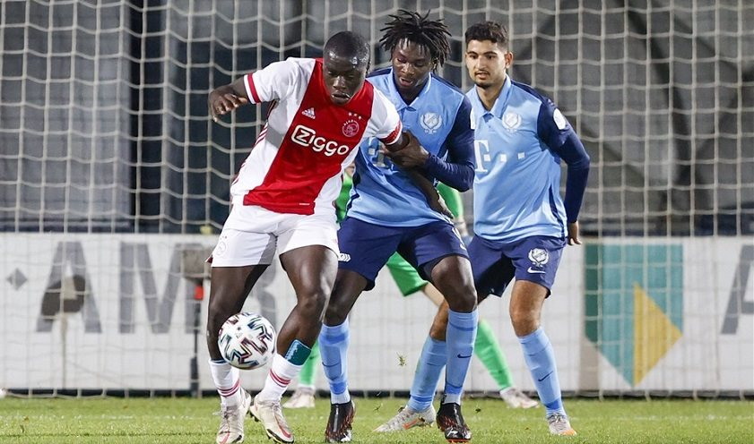
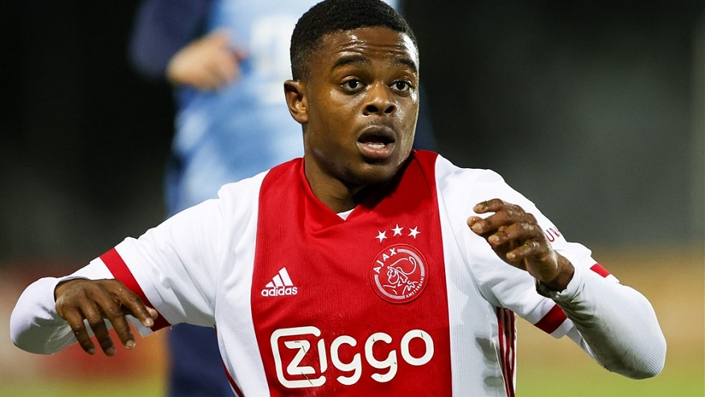
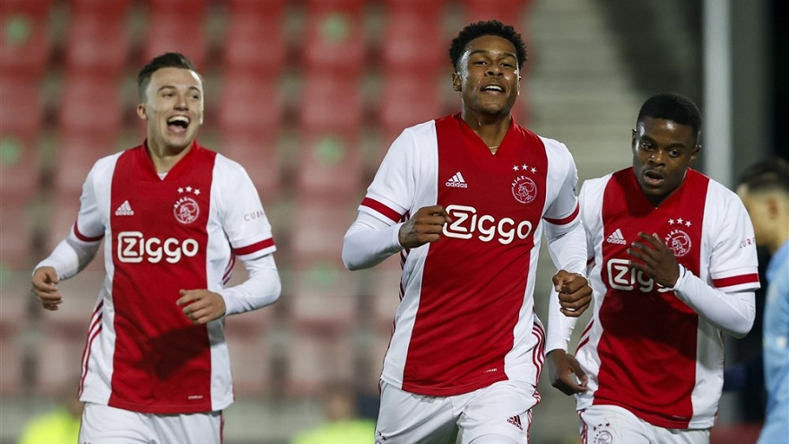
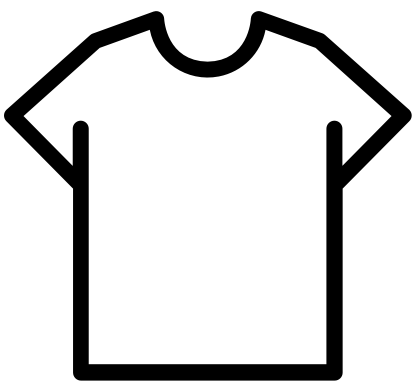
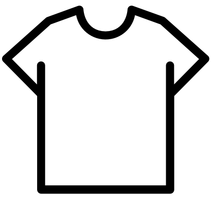

Jong ajax gaat ook voorbij Jong Utrecht
Jong Ajax heeft voor de tweede keer in vier dagen van een belofteploeg gewonnen. Op sportcomplex de Toekomst won de thuisploeg dankzij doelpunten van Sontje Hansen, Terrence Douglas en Brian Brobbey met 3-2 van Jong FC Utrecht. Alle doelpunten vielen na rust. Het elftal was slechts op twee plekken gewijzigd ten opzichte van het vorige duel met Jong AZ. Kjell Scherpen verdedigde het doel, en Kenneth Taylor verving de geschorste Victor Jensen. Max de Waal startte wederom als rechtsbuiten.
Het elftal was slechts op twee plekken gewijzigd ten opzichte van het vorige duel met Jong AZ. Kjell Scherpen verdedigde het doel en Kenneth Taylor verving de geschorste Victor Jensen. Max de Waal startte wederom als rechtsbuiten.
Sterk begin Jong Ajax
Jong Ajax begon met veel energie aan de wedstrijd en was direct gevaarlijk via Giovanni en Brobbey. Vooral de Braziliaan had het in de beginfase op zijn heupen, want even later knalde een schot van hem op de kruising uiteen. De bal wilde er niet in. Toen Kenneth Taylor even later wederom doelman Paes testte, diende volgend onheil zich aan: Alex Méndez raakte door een tackle geblesseerd en moest het veld verlaten.
 Door het uitvallen van Alex Méndez maakte Sontje Hansen al snel zijn opwachting.Het inbrengen van Hansen zorgde ervoor dat De Waal weer een linie zakte naar zijn vertrouwde middenveld. Jong Ajax moest daardoor wel weer even het ritme vinden, want in een periode waarin weinig voor beide doelen gebeurde kwam Jong FC Utrecht iets beter in de wedstrijd. Tot kansen kwamen de Domstedelingen niet.
Meer evenwicht na rust
Jong FC Utrecht hield na rust de gelederen iets beter gesloten en het was dan ook lastig voor Jong Ajax om tot goede doelpogingen te komen. Sterker nog, Utrecht werd iets gevaarlijker voor het doel en Scherpen toonde met een prachtige redding maar weer eens aan dat hij zich uitstekend ontwikkelt. Niet alleen door die redding overigens, want elke hoge bal is voor hem en dankzij de rust die hij uitstraalt staan ook de verdedigers voor hem zekerder in het veld.
Ondanks dat de wedstrijd op slot leek te zitten en Jong Ajax veel minder kansen creëerde dan in de eerste helft, lag er plots wat ruimte. Brobbey kon, als vanouds met een tegenstander hangend aan zijn arm, op het doel af. Hij zag zijn inzet nog gekeerd worden, maar in de rebound kon Hansen de bal in het lege doel schuiven. De 1-0 gaf Jong Ajax wat meer vertrouwen, en even later kon linksback Douglas naar binnen trekken om met een heerlijke streep de 2-0 aan te tekenen.
 Ontlading bij Terrence Douglas (midden) na het maken van de 2-0.Spannende slotfase
De wedstrijd leek gespeeld, maar ineens lag de aansluitingstreffer achter Scherpen. Van dichtbij schoot Van den Berg raak. Lang hield die marge van één niet stand. Het was namelijk Brobbey die de wedstrijd in het slot gooide door zich wederom langs een verdediger te worstelen en de bal onder Paes door te schieten.
En ook nú was de wedstrijd niet beslist, want vlak daarna scoorde Jong FC Utrecht opnieuw de aansluitingstreffer.
Het zorgde voor nog enige samengeknepen billen in de slotfase, maar Scherpen hield zijn doel verder schoon en zo bleven de drie punten terecht in Amsterdam. Door de overwinning nestelt Jong Ajax zich in het linkerrijtje en mag het vrijdag op bezoek bij MVV proberen de goede lijn voort te zetten.
 
